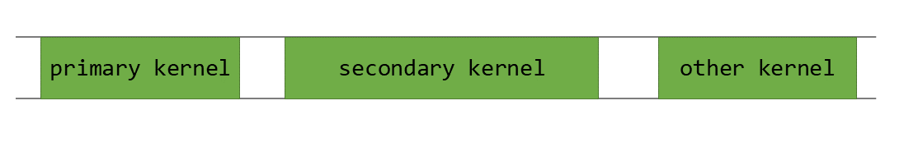
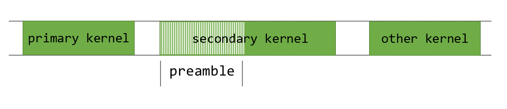

4.5. 程序化依赖启动与同步#
程序化依赖启动 机制允许有依赖关系的 secondary（辅助）内核，在同一 CUDA 流中其所依赖的 primary（主）内核完成执行之前启动。该技术从计算能力 9.0 的设备开始可用；当辅助内核能够完成大量不依赖主内核结果的工作时，它可以带来性能收益。
4.5.1. 背景#
CUDA 应用程序通过在 GPU 上启动并执行多个内核来使用 GPU。典型的 GPU 活动时间线如 图39 所示。
{kind=link}

图39 GPU 活动时间线#
这里，secondary_kernel 会在 primary_kernel 执行完成之后启动。通常需要串行执行，因为 secondary_kernel 依赖 primary_kernel 生成的结果数据。如果 secondary_kernel 不依赖 primary_kernel，二者就可以使用 CUDA 流 并发启动。即使 secondary_kernel 依赖 primary_kernel，仍然可能存在一定的并发执行空间。例如，几乎所有内核都有某种 preamble（序言）部分，在这部分中会执行清零缓冲区、加载常量值等任务。
{kind=link}

图40 secondary_kernel 的序言部分#
图40 展示了 secondary_kernel 中可以并发执行且不会影响应用程序的部分。请注意，并发启动还允许我们把 secondary_kernel 的启动延迟隐藏在 primary_kernel 的执行之后。

图41 primary_kernel 和 secondary_kernel 的并发执行#
图41 所示的 secondary_kernel 并发启动和执行，可以通过 程序化依赖启动 实现。
程序化依赖启动 对 CUDA 内核启动 API 引入了若干变化，如下一节所述。这些 API 至少需要计算能力 9.0 才能提供重叠执行。
4.5.2. API 说明#
在程序化依赖启动中，主内核和辅助内核会在同一 CUDA 流中启动。当主内核已经准备好让辅助内核启动时，主内核的所有线程块都应执行 cudaTriggerProgrammaticLaunchCompletion。辅助内核必须使用可扩展启动 API 启动，如下所示。
__global__ void primary_kernel() {
// 启动辅助内核之前应完成的初始工作
// 触发辅助内核
cudaTriggerProgrammaticLaunchCompletion();
// 可以与辅助内核重叠执行的工作
}
__global__ void secondary_kernel()
{
// 独立工作
// 将阻塞，直到辅助内核依赖的所有主内核都已完成，
// 并且结果已刷新到全局内存
cudaGridDependencySynchronize();
// 依赖工作
}
cudaLaunchAttribute attribute[1];
attribute[0].id = cudaLaunchAttributeProgrammaticStreamSerialization;
attribute[0].val.programmaticStreamSerializationAllowed = 1;
configSecondary.attrs = attribute;
configSecondary.numAttrs = 1;
primary_kernel<<<grid_dim, block_dim, 0, stream>>>();
cudaLaunchKernelEx(&configSecondary, secondary_kernel);
当辅助内核使用 cudaLaunchAttributeProgrammaticStreamSerialization 属性启动时，CUDA 驱动程序可以安全地提前启动辅助内核，而不必在启动辅助内核之前等待主内核完成并完成内存刷新。
当所有主内核线程块都已启动并执行 cudaTriggerProgrammaticLaunchCompletion 后，CUDA 驱动程序就可以启动辅助内核。如果主内核没有执行该触发操作，则它会在主内核中的所有线程块退出后隐式发生。
无论哪种情况，辅助线程块都有可能在主内核写入的数据变为可见之前启动。因此，当辅助内核配置为使用 程序化依赖启动 时，它必须始终使用 cudaGridDependencySynchronize，或通过其他方式确认来自主内核的结果数据已经可用。
请注意，这些方法只是为主内核和辅助内核并发执行提供机会；这种行为是机会性的，并不保证一定会产生并发内核执行。以这种方式依赖并发执行是不安全的，并且可能导致死锁。
4.5.3. 在 CUDA 图中使用#
程序化依赖启动可以通过 流捕获 用于 CUDA 图，也可以直接通过 边数据 使用。要在带有边数据的 CUDA 图中对该功能进行编程，请在连接两个内核节点的边上使用 cudaGraphDependencyType 值 cudaGraphDependencyTypeProgrammatic。这种边类型会让上游内核对下游内核中的 cudaGridDependencySynchronize() 可见。该类型必须配合出端口 cudaGraphKernelNodePortLaunchCompletion 或 cudaGraphKernelNodePortProgrammatic 使用。
流捕获得到的等价图边如下：
流代码（略） |
生成的图边 |
|---|---|
cudaLaunchAttribute attribute;
attribute.id = cudaLaunchAttributeProgrammaticStreamSerialization;
attribute.val.programmaticStreamSerializationAllowed = 1;
|
cudaGraphEdgeData edgeData;
edgeData.type = cudaGraphDependencyTypeProgrammatic;
edgeData.from_port = cudaGraphKernelNodePortProgrammatic;
|
cudaLaunchAttribute attribute;
attribute.id = cudaLaunchAttributeProgrammaticEvent;
attribute.val.programmaticEvent.triggerAtBlockStart = 0;
|
cudaGraphEdgeData edgeData;
edgeData.type = cudaGraphDependencyTypeProgrammatic;
edgeData.from_port = cudaGraphKernelNodePortProgrammatic;
|
cudaLaunchAttribute attribute;
attribute.id = cudaLaunchAttributeProgrammaticEvent;
attribute.val.programmaticEvent.triggerAtBlockStart = 1;
|
cudaGraphEdgeData edgeData;
edgeData.type = cudaGraphDependencyTypeProgrammatic;
edgeData.from_port = cudaGraphKernelNodePortLaunchCompletion;
|